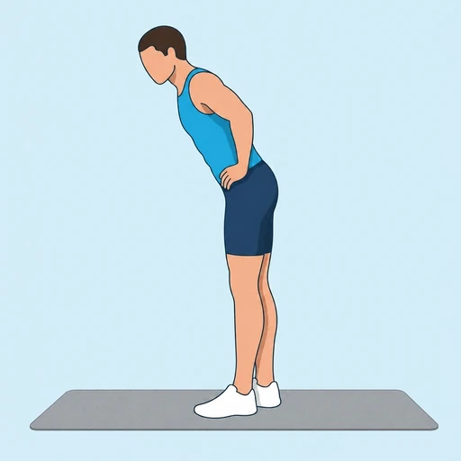

Banded Standing Leg Curl
A standing hamstring curl using a loop band anchored around the ankle, useful for travel or as a low-load hamstring finisher.
Upper legs · Loop Band · Beginner


Muscles worked by the Banded Standing Leg Curl
Primary
Secondary
Also called: hamstring, hamstrings, posterior thigh, biceps femoris.
Equipment
Also called: mini band, hip band, booty band, fabric band, glute band, mini loop band.
How to do the Banded Standing Leg Curl
- Loop a resistance band around one ankle and anchor the other end under your standing foot or a fixed point in front of you.
- Stand tall, holding onto something for balance if needed, with a slight bend in the standing knee.
- Curl the banded heel up and back toward your glute, keeping the thigh still.
- Squeeze the hamstring at the top, then lower under control to a full stretch.
- Complete all reps on one side, then switch legs.
Form tips
- Keep the thigh stationary — only the lower leg should move.
- Avoid swinging the hips to generate momentum.
- Use a lighter band if you can't control the descent.
At a glance
| Body part | Upper legs |
|---|---|
| Category | Strength |
| Force type | Pull |
| Mechanic | Isolation |
| Difficulty | Beginner |
| Equipment | Loop Band |
| Goals | Hypertrophy |
| Tags | Arm day, Pull day |
| MET | 5.0 (metabolic equivalent, for calorie estimates) |
| Unilateral | Yes |
| Bodyweight | No |
| Dataset id | banded-standing-curl |
Banded Standing Leg Curl in German & Spanish
| German | Stehender Beinbeuger mit Band |
|---|---|
| Spanish | Curl de Pierna de Pie con Banda |
Descriptions, instructions and tips ship in all three languages in the JSON.
Related exercises
Exercise data (JSON)
The record below is exactly what exercises.json ships for this exercise — names, descriptions, instructions and tips in English, German and Spanish.
{
"id": "banded-standing-curl",
"name_en": "Banded Standing Leg Curl",
"name_de": "Stehender Beinbeuger mit Band",
"name_es": "Curl de Pierna de Pie con Banda",
"description_en": "A standing hamstring curl using a loop band anchored around the ankle, useful for travel or as a low-load hamstring finisher.",
"description_de": "Ein stehender Beincurl mit einem Loop-Band um den Knöchel, gut für unterwegs oder als Hamstring-Finisher mit geringer Last.",
"description_es": "Un curl femoral de pie con una banda elástica alrededor del tobillo, útil para viajes o como finalizador con poca carga para isquiotibiales.",
"category": "strength",
"force_type": "pull",
"mechanic": "isolation",
"difficulty": "beginner",
"equipment": "loop_band",
"body_part": "upper_legs",
"primary_muscles": [
"hamstrings"
],
"secondary_muscles": [
"gastrocnemius"
],
"goals": [
"hypertrophy"
],
"tags": [
"arm_day",
"pull_day"
],
"variation_group": "bicep-curl",
"is_unilateral": true,
"is_bodyweight": false,
"instructions_en": [
"Loop a resistance band around one ankle and anchor the other end under your standing foot or a fixed point in front of you.",
"Stand tall, holding onto something for balance if needed, with a slight bend in the standing knee.",
"Curl the banded heel up and back toward your glute, keeping the thigh still.",
"Squeeze the hamstring at the top, then lower under control to a full stretch.",
"Complete all reps on one side, then switch legs."
],
"instructions_de": [
"Lege ein Loop-Band um einen Knöchel und verankere das andere Ende unter dem Standfuß oder an einem festen Punkt vor dir.",
"Stehe aufrecht, halte dich bei Bedarf zum Gleichgewicht fest, leichte Beugung im Standbein.",
"Curle die Ferse mit dem Band nach oben und hinten zum Gesäß, Oberschenkel bleibt ruhig.",
"Spanne den Hamstring oben an, senke dann kontrolliert in volle Streckung.",
"Beende alle Wiederholungen auf einer Seite, dann wechsle das Bein."
],
"instructions_es": [
"Coloca una banda elástica alrededor de un tobillo y ancla el otro extremo bajo el pie de apoyo o en un punto fijo delante de ti.",
"Mantente erguido, sujétate a algo si necesitas equilibrio, con ligera flexión en la pierna de apoyo.",
"Sube el talón con la banda hacia el glúteo, manteniendo el muslo quieto.",
"Contrae el isquiotibial arriba, luego baja con control hasta el estiramiento completo.",
"Completa todas las repeticiones de un lado y cambia de pierna."
],
"tips_en": [
"Keep the thigh stationary — only the lower leg should move.",
"Avoid swinging the hips to generate momentum.",
"Use a lighter band if you can't control the descent."
],
"tips_de": [
"Halte den Oberschenkel ruhig — nur der Unterschenkel bewegt sich.",
"Vermeide Schwung aus der Hüfte.",
"Nimm ein leichteres Band, wenn du die Abwärtsbewegung nicht kontrollieren kannst."
],
"tips_es": [
"Mantén el muslo quieto — solo se mueve la parte inferior de la pierna.",
"Evita balancear la cadera para tomar impulso.",
"Usa una banda más ligera si no puedes controlar el descenso."
],
"met": 5.0,
"images": {
"flat": {
"start": "images/flat/banded-standing-curl-start.webp",
"peak": "images/flat/banded-standing-curl-peak.webp"
}
}
}Fetch just this exercise
const { exercises } = await fetch(
"https://exercise-dataset.com/exercises.json"
).then(r => r.json());
const ex = exercises.find(e => e.id === "banded-standing-curl");Free for personal and commercial in-app use with attribution (“Exercise data by RepDB”) — see the license and ready-made attribution snippets. Redistributing the data as a dataset or API is not permitted.